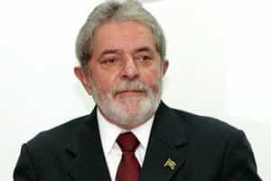

Quintus can be found at qcurtius.com. He is the author of the books On Duties, Thirty Seven, Sallust: The Conspiracy Of Catiline And The War Of Jugurtha, and other books. His work has been reviewed at Taki's Magazine. He can be followed on Twitter


Make no mistake: the US elites (of both political parties) are deeply afraid. For the first time in decades, they feel they are sitting atop a powder keg. The economy is in ruins, despite the delusional propaganda emanating out of Washington. Students are crushed with debt and enraged. Working people of all classes, races, and backgrounds sense (correctly) that they are working more and more for less and less.
And behind it all, a stifling apparatus of political correctness operates to silence or intimidate those who dare to question the official state religions. To distract the people from the real enemies—themselves—the media and political elites manufacture convenient scapegoats in the form of mythological entities like “patriarchies,” “income inequalities,” “rape cultures,” and the like. It has all become so routine as to pass nearly without comment in educated circles.
They can’t stop him fairly, so now they’re going to play dirty
In the political arena, the same obsessive need for control is on display. As outsider Donald Trump seems set to close in on the Republican presidential nomination, one can almost feel the terror emanating out of the Republican old guard. Trump is an unknown quantity. They don’t know if he’ll fire the lot of them—as he should—should he ever win the presidency.
They’ve got decades of guilt on their hands, and they know it. So now they are moving into overdrive to torpedo Trump. It looks like it’s going to be the usual lie-and-smear tactics, with a bit of violence thrown into the mix. We’re going to see more and more of this sort of thing:
1. Cherry-picking of Trump statements to paint him as the most evil creature since Genghis Khan.
2. Media lying and obfuscation of his positions.
3. Creation of fake crises at Trump rallies, and then blaming them on Trump.
4. Holier-than-thou pronouncements from the political insiders who have done nothing for the past 25 years.
5. Instigation of violence at Trump events to prevent him from speaking.
Trump knows this, of course, and is well-prepared to thwart these tactics. I hope he knows that he’s going to be facing an avalanche of lies, hate, and orchestrated intimidation. But what is interesting about the elite assault on Trump is how it mirrors the elite assault on other political figures around the world. There is a direct correlation with the treatment of Trump, as there is with the elite treatment of other uncontrollable political figures, like Brazil’s Lula and Russia’s Putin.
All three of these figures threaten the status quo in their countries. And all three of them have come under ferocious attacks by elites who are terrified of seeing their traditional dominance challenged. Elites of the Republican and Democratic parties want a stooge they can control. They want someone who will simply read the teleprompter, not ask any questions, and not do anything to change the system or rock the boat. They want someone who will allow them to continue their looting of the country’s wealth, and their transference of that wealth into fewer and fewer hands, a process that has been going on since the 1980s.
Remember that the US elites were the ones who coined the term “regime change.” And they meant it, too. Just as in the case of Donald Trump, the message is clear: if you don’t toe the party line and do what they want, you will be targeted for subversion and overthrow. The objective here, as always, is control.
Washington has never been comfortable with the whole idea of the “BRIC” nations, consisting of Russia, Brazil, China, and India. They were beginning to exercise a dangerous level of independence from the US elites and their economic instruments, such as the World Bank and the UN.
There was talk about forming currency regimes free from the US dollar, and political initiatives outside the control of Washington. There were plans for constructing a new fiber-optic cables connecting Brazil, Europe, and Asia. The apple cart was being pushed unacceptably, in the eyes of the elites. Therefore, in the logic of the elites, the offenders needed to be undermined.
Putin himself has long known this, and accepts this as the price of being independent. Foreign elites loved the Russia of the 1990s because it was corrupt, weak, and in the hands of oligarchs whom they could control or buy off. Putin upset the apple cart by changing all of that.
His early moves to arrest elite-friendly Russian oligarchs and restore Russian sovereignty elicited the usual response from the elites: accusations of cruelty, allegations of “human rights” abuses, and the standard litany of horribles. Putin himself ignored them, and enraged them even more by restoring Russian political and military power.
The same sort of dynamic in in play with the case of Brazil. Early on in his presidency, Lula (Luiz Inácio Lula da Silva) had made himself an enemy of the Washington elites by putting his country ahead of the interests of US corporations. Some of the biggest offshore oil deposits in the world were recently discovered in Brazilian territory, and the elites immediately wanted to move in to privatize that wealth.
Lula’s intention was to give these concessions to state-run Petrobras. Exxon and Chevron were shunted to the sidelines, while Petrobras and China’s Sinopec were favored. Elites were not happy. They were not happy at all. No one was surprised to find out (by way of Wikileaks and Edward Snowden) that the US had been spying on Lula and his successor, Dilma Rousseff. Brazilian elites are not happy with Lula and his protégé, whom they see as committing the unforgivable sins of trying to improve the lot of the poor and disenfranchised.

Lula was recently humiliated by being hauled in for “questioning” in the country’s deepening political scandal about “corruption.” Why now? To say that corruption exists in Brazil is not the point: everyone knows it’s there, but the point is that it’s always been there. We only hear about it when the media wants to use it for some purpose.
What elites are really afraid of is the possibility of Lula running for president again in 2018. The real objective of the current corruption investigation (code-named “Car Wash” in the Brazilian press) is not so much to expose corruption in Brazilian politics, which has more or less existed for 300 years. It is to lay the groundwork for an impeachment of Rousseff, and bring about the much-desired “regime change” in Brasilia. The plan may have backfired, as Lula is a skilled political operator and knows how to turn himself into a martyr.
In other words: regime change, and then business as usual. It looks like Trump, Putin, and Lula have a lot more in common than any of them might have thought.
Read More: How The Corporate Hivemind Is Losing Control Over Society